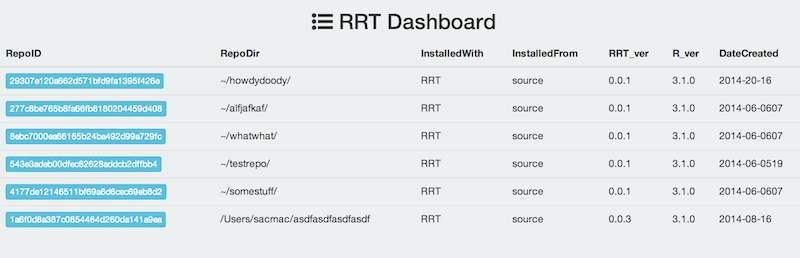

Tutorial
- Install RRT
- Create an RRT repository
- Refresh repository
- Install packages
- Package compatibility check
- Browse your RRT repositories
- Get a list of repositories within R
- Starting R from a repo
- Get packages from MRAN
- Clean ('sweep') out all packages from your repository
# Install RRT
On Linux, get xml C library first (on the command line)
(sudo) apt-get update
(sudo) apt-get install r-cran-xml
You may need libcurl too. Do report in the issues tab if you run into this problem.
Get dependency miniCRAN that is not on CRAN
In an R session
install.packages("devtools")
library("devtools")
devtools::install_github("andrie/miniCRAN")
Optionally, install git2r to use git from within R. git2r is in Enhances in RRT, so you don't need it to install RRT
devtools::install_github("ropensci/git2r")
Then install RRT
devtools::install_github("RevolutionAnalytics/RRT")
library("RRT")
# Create an RRT repository
# Create a repo without user input
rrt_init("~/mynewrepository")
Checking to see if repository exists already...
Creating repository ~/mynewrepository
Checing to make sure rrt directory exists inside your repository...
Creating rrt directory ~/mynewrepository/rrt/lib/x86_64-apple-darwin13.1.0/3.1.0
Looking for packages used in your repository...
Writing repository manifest...
>>> RRT initialization completed.
You should now have a RRT repository
# Or create a repo interactively
This process will ask you questions
rrt_init(interactive=TRUE)
Repository name (default: random name generated):
somenewrepo # user entered
Repository path (default: home directory + repository name):
# user left blank
Repository author(s) (default: left blank):
Scott Chamberlain # user entered
Repo license (default: MIT):
GPL-2 # user entered
Repo description (default: left blank):
A repository for research on x, y, and z # user entered
Repo remote git or svn repo (default: left blank):
https://github.com/sckott/somenewrepo # user entered
With similar message as above for other checks
Checking to see if repository exists already...
Creating repository /Users/sacmac/somenewrepo
Checing to make sure rrt directory exists inside your repository...
Creating rrt directory /Users/sacmac/somenewrepo/rrt/lib/x86_64-apple-darwin13.1.0/3.1.0
Looking for packages used in your repository...
Writing repository manifest...
>>> RRT initialization completed.
# Refresh repository
rrt_refresh() is used to update the packages installed locally in your repository by looking through the repository files again for new packages. After we initiated a new repo above with rrt_init() we may add some code in a code.R file. Then we want to update the packages in the repo, which can be done with rrt_refresh().
rrt_refresh("~/mynewrepository")
Checking to make sure repository exists...
Checking to make sure rrt directory exists inside your repository...
Looking for packages used in your repository...
Getting new packages...
Creating new folders: ~/mynewrepository/rrt/lib/x86_64-apple-darwin13.1.0/3.1.0/src/contrib
trying URL 'http://cran.r-project.org/src/contrib/plyr_1.8.1.tar.gz'
Content type 'application/x-gzip' length 393233 bytes (384 Kb)
opened URL
==================================================
downloaded 384 Kb
trying URL 'http://cran.r-project.org/src/contrib/Rcpp_0.11.2.tar.gz'
Content type 'application/x-gzip' length 2004313 bytes (1.9 Mb)
opened URL
==================================================
downloaded 1.9 Mb
Writing repository manifest...
>>> RRT refresh completed.
As you can see rrt_refresh() scans the repo for new packages used, downloads them if any new ones, and updates the manifest file.
# Install packages
rrt_init() and rrt_refresh() do not install any packages. Packages are downloaded, but not installed yet. The installation process is separate on purpose, but if needed could become part of the initialization and/or refresh functions.
rrt_install() installs packages into the repository itself
rrt_install("~/mynewrepository")
Checking to make sure repository exists...
Checing to make sure rrt directory exists inside your repository...
Looking for packages used in your repository...
Installing packages...
...cutoff
# Package compatibility check
This will be done by rrt_compat() - this function is not done yet...
# Browse your RRT repositories
This function uses rrt_repos_list() (see below) internally, and uses the whisker R package to build a series of web pages to easily understand what RRT repos exist on your machine, their details, etc.
rrt_browse()
Should open up a web page in your default browser

You can click on each green button to get to more detailed data for each repository

# Get a list of repositories within R
rrt_repos_list()
No. repos: 8
First 10 repo ids : 29307e120a662d571bfd9fa1395f426e, 277c8be765b8fa66fb8180204459d408, 8ebc7000ea66165b24ba492d99a729fc, 543e3adeb00dfec82628addcb2dffbb4, 4177de12146511bf69a6d6cec69eb8d2, 1a6f0d8a387c0854464d260da141a9ea, 837809181e43446a37f550c0ef38c125, 0b34a89dda7b251d24c39fd90bf9881c
rrt_repos_list()[[1]]
$repo
[1] "~/howdydoody//rrt/rrt_manifest.txt"
$InstalledWith
[1] "RRT"
$InstalledFrom
[1] "source"
$RRT_version
[1] "0.0.1"
$R_version
[1] "3.1.0"
$DateCreated
[1] "2014-20-16"
$PkgsInstalledAt
[1] "/Users/sacmac/howdydoody//rrt/lib/x86_64-apple-darwin13.1.0/3.1.0"
$RepoID
[1] "29307e120a662d571bfd9fa1395f426e"
$Packages
[1] "colorspace,dichromat,digest,ggplot2,gtable,labeling,MASS,munsell,plyr,proto,RColorBrewer,Rcpp,reshape2,scales,stringr,lattice"
$SystemRequirements
[1] ""
$repo_root
[1] "~/howdydoody/"
# Starting R from a repo
If you start R from a RRT repository R will use the repository specific .Rprofile file and look for packages in the repository to install instead of the global R packages library.
# Get packages from MRAN
Note: this doesn't install them, only downloads them.
pkgs_marmoset(pkgs=c("plyr","ggplot2"), outdir="~/marmoset_snaps/stuff/")
Snapshots are done a number of times each day, so a date input is used to check what snapshots are available for that date. If there is more than one, the options are listed, and you press the number of the row that corresponds to the snapshot you want to use. Then rsync is used to download the package(s) to the directory you specify in the outdir parameter. Currently, you have to specify package and version number as package_ver.
snapshots
1 2014-06-19_0053
2 2014-06-19_0103
3 2014-06-19_0111
4 2014-06-19_0126
5 2014-06-19_0136
6 2014-06-19_0802
7 2014-06-19_0817
8 2014-06-19_1100
9 2014-06-19_1400
More than one snapshot matching your date found
Enter rownumber of snapshot (other inputs will return 'NA'):
1: 9
receiving file list ...
4 files to consider
ggplot2/
ggplot2/ggplot2_1.0.0.tar.gz
2.35M 100% 2.07MB/s 0:00:01 (xfer#1, to-check=2/4)
plyr/
plyr/plyr_1.8.1.tar.gz
393.23K 100% 1.99MB/s 0:00:00 (xfer#2, to-check=0/4)
sent 125 bytes received 2.75M bytes 1.10M bytes/sec
total size is 2.74M speedup is 1.00
# Clean
You can clean out all package sources and installed packages from your repository with a single easy to use function: rrt_sweep(). This defaults to work from your current working directory, and deletes all package sources and installed packages. This basically creates a clean slate in your rrt/ directory in your respository. Your manifest file is unchanged though to retain metadata important to replication of your efforts.
rrt_sweep()
Checking to make sure repository exists...
Checing to make sure rrt directory exists inside your repository...
Package sources removed
Your repository packages successfully removed:
abind
doMC
foreach
iterators
itertools
plyr
Rcpp
testthat
This leaves you with all your personal files, your rrt/ directory, and your manifest file intact.